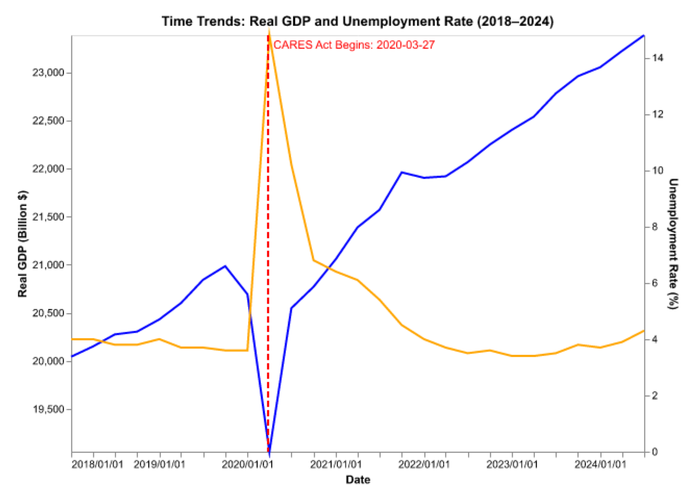

import os
import matplotlib.image as mpimg
import matplotlib.pyplot as plt
plot_path = '/Users/cynthia/Desktop/final-project-xy-wz/write_up/pictures'
Plot_path_1_1 = os.path.join(plot_path, 'Plot_1.1.png')
def show_image(image_path, figsize=(8, 6)):
img = mpimg.imread(image_path)
plt.figure(figsize=figsize)
plt.imshow(img)
plt.axis('off')
plt.show()
show_image(Plot_path_1_1)PPHA 30538 1- Final Project Writeup
Group Members:
Xinyi Zhou (Github:XinyiZhou66) , Responsible part: line chart, and shiny app part 2 (Trends in Real GDP and Unemployment Rate… )
Wuzhen Han (Github:hanwuzhen), Responsible part: bar chart, and shiny app part 1 (Unemployment Rate by State- heatmap)
Research Topic: Evaluating the Effectiveness of the CARES Act in Accelerating Employment Recovery During the COVID-19 Pandemic
The goal of this research is to evaluate the effectiveness of the CARES Act in accelerating employment recovery during the COVID-19 pandemic. Specifically, we analyzed trends in Real Gross Domestic Product (GDP) and unemployment rates to determine if the CARES Act, with its economic stimulus provisions, helped reduce unemployment more effectively compared to other measures. Our analysis took place at both the national and state levels, focusing on disparities across states and changes over time to assess the Act’s impact comprehensively.
To conduct our analysis, we utilized multiple data sources. The GDP data was collected from the Federal Reserve Economic Data (FRED) database, which provided an accurate representation of the U.S. economy’s growth over time. For unemployment rates, we used two datasets from the Bureau of Labor Statistics (BLS). The first dataset provided overall yearly unemployment rates for the entire United States, which we downloaded directly from the BLS website. The second dataset contained state-level unemployment rates. Additionally, information on CARES Act funding was sourced from Treasury Department documents, and geographic data were collected from the U.S. Census Bureau, which helped facilitate our state-level analysis.
We conducted Natural Language Processing (NLP) analysis on the CARES Act report to gain insights. Sentiment analysis helped assess the emotional tone, capturing polarity and subjectivity. Named Entity Recognition identified key entities like organizations and locations, while tokenization and Part-of-Speech tagging provided a detailed breakdown of the text. This allowed us to better understand the content and overall narrative of the document.
Our analysis relies on two key assumptions. First, we assume that changes in unemployment rates and Real GDP are largely due to the CARES Act, though other factors may also influence these outcomes. We also assume uniform state responses to the CARES Act, ignoring differences in local policies and economic conditions.
The research employed quantitative, descriptive, and interactive analysis to evaluate the impact of the CARES Act. Quantitative analysis included static visualizations such as bar charts depicting the distribution of CARES Act funding and line plots of unemployment rates and Real GDP trends. California, Texas, and New York received the most funding, and we compared this funding distribution to unemployment trends to assess recovery. Interactive visualizations provided deeper insight into economic changes, aiming to offer both macro and detailed perspectives on the CARES Act’s impact during the pandemic. This dashboard had two main components:
The first component was a heatmap showing state-level unemployment rates from 2018 to 2024. Users could select different years to observe how unemployment varied across the United States, highlighting the three states with the highest rates each year. The second component of our dashboard focused on broader trends in economic indicators such as Real GDP and unemployment rates over the same period. This component allowed users to explore different time periods, such as before the CARES Act was implemented (2018 Q1 to 2020 Q1), during the CARES Act implementation (2020 Q2), and after its implementation. These periods helped illustrate changes over time, such as the initial surge in unemployment and GDP drop at the start of the pandemic and the subsequent recovery. The line charts clearly depicted the impact of the CARES Act’s timing on both employment and GDP recovery.
The analysis led to several notable findings. In 2019, unemployment rates were relatively low. However, in 2020, unemployment surged, especially in tourism-heavy states like Nevada, Hawaii, and California, with Nevada reaching 13.5% (plot 2.1). By 2021, unemployment rates declined, with California dropping from 10.1% in 2020 to 7.3% (plot 2.2), partly influenced by the $193 million it received from the CARES Act. This suggests that targeted federal aid may have helped mitigate the effects of unemployment in hard-hit states. Nationally, a vertical dashed line marked the CARES Act implementation, helping to visualize its impact (plot 1.2). The trend analysis revealed an economic downturn in early 2020, with a spike in unemployment and a GDP drop (plot 3.1). Following the CARES Act, there was an almost immediate recovery in GDP and unemployment (plot 3.2). The interactive dashboard helped users distinguish short-term improvements from longer-term trends, showing continued economic recovery. These findings suggest that the CARES Act was instrumental in stabilizing the economy and aiding employment recovery, though other factors also contributed.
In our project, one limitation was that we did not account for population differences when analyzing the distribution of CARES Act funding. The bar plot presented the total funding received by each state, meaning that larger states like California and Texas naturally appeared to receive more. This approach lacks a per capita perspective, which would have provided more insight into the fairness and effectiveness of the fund allocation relative to each state’s population and needs. Additionally, our analysis focused primarily on unemployment rate and Real GDP, while neglecting other important metrics like inflation rate or household financial stability, which could have offered a broader understanding of the CARES Act’s impact during the pandemic.
For future work, incorporating econometric models could better help isolate the impact of the CARES Act from other influencing factors. This would improve the robustness of our conclusions. Moreover, breaking down the “Unemployment Rate by State” into monthly data for 2021 could provide insights into how different cities were impacted over time, capturing the dynamic response in key metropolitan areas. This approach would allow us to identify whether some cities recovered faster than others and understand the differential effects within states, offering a more granular perspective on how effectively the CARES Act supported various local economies. It would also be valuable to explore other aspects, such as household financial stability or small business recovery, to gain a broader understanding of the CARES Act’s influence during the pandemic.
Plot 1.1
Plot 1.2
Plot_path_1_2 = os.path.join(plot_path, 'Plot_1.2.png')
def show_image(image_path, figsize=(8, 6)):
img = mpimg.imread(image_path)
plt.figure(figsize=figsize)
plt.imshow(img)
plt.axis('off')
plt.show()
show_image(Plot_path_1_2)
Plot 2.1
Plot_path_2_1 = os.path.join(plot_path, 'Plot_2.1.png')
def show_image(image_path, figsize=(8, 6)):
img = mpimg.imread(image_path)
plt.figure(figsize=figsize)
plt.imshow(img)
plt.axis('off')
plt.show()
show_image(Plot_path_2_1)Plot 2.2
Plot_path_2_2 = os.path.join(plot_path, 'Plot_2.2.png')
def show_image(image_path, figsize=(8, 6)):
img = mpimg.imread(image_path)
plt.figure(figsize=figsize)
plt.imshow(img)
plt.axis('off')
plt.show()
show_image(Plot_path_2_2)Plot 3.1
Plot_path_3_1 = os.path.join(plot_path, 'Plot_3.1.png')
def show_image(image_path, figsize=(8, 6)):
img = mpimg.imread(image_path)
plt.figure(figsize=figsize)
plt.imshow(img)
plt.axis('off')
plt.show()
show_image(Plot_path_3_1)Plot 3.2
Plot_path_3_2 = os.path.join(plot_path, 'Plot_3.2.png')
def show_image(image_path, figsize=(8, 6)):
img = mpimg.imread(image_path)
plt.figure(figsize=figsize)
plt.imshow(img)
plt.axis('off')
plt.show()
show_image(Plot_path_3_2)